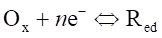
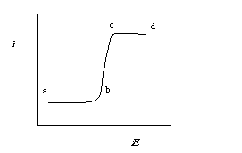
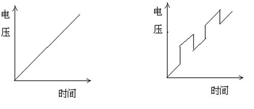
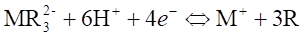
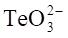
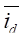
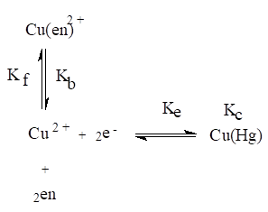
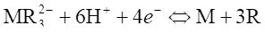

十、伏安法和极谱法（387题）
一、选择题 ( 共138题 )
1. 2 分 (1111)
直流极谱法中将滴汞电极和饱和甘汞电极浸入试液中组成电解电池，两个电极的性质应为 ( )
(1) 两个电极都是极化电极
(2) 两个电极都是去极化电极
(3) 滴汞电极是极化电极，饱和甘汞电极是去极化电极
(4) 滴汞电极是去极化电极，饱和甘汞电极是极化电极
2. 2 分 (1112)
在极谱分析中，在底液中加入配合剂后，金属离子则以配合物形式存在，随着配合剂浓度增加,半波电位变化的方式为 ( )
(1) 向更正的方向移动
(2) 向更负的方向移动
(3) 不改变
(4) 决定于配合剂的性质，可能向正，可能向负移动
3. 1 分 (1118)
极谱催化波的形成过程如下：
O + ne-→ R （电极反应）
↑_________
↓
R + Z ＝ O （化学反应）
其产生机理是 ( )
(1) O 催化 Z 的还原 (2) O 催化 R 的氧化
(3) Z 催化 O 的还原 (4) Z 催化 R 的氧化
4. 2 分 (1119)
影响经典极谱分析灵敏度的主要因素为 ( )
(1) 迁移电流的存在 (2) 充电电流的存在
(3) 氧波的出现 (4) 极大现象的出现
5. 1 分 (1120)
溶出伏安法可采用的工作电极为 ( )
(1) 滴汞电极 (2) 悬汞电极
(3) 银－氯化银电极 (4) 玻璃电极
6. 2 分 (1121)
极谱波形成的根本原因为 ( )
(1) 滴汞表面的不断更新
(2) 溶液中的被测物质向电极表面扩散
(3) 电化学极化的存在
(4) 电极表面附近产生浓差极化
7. 2 分 (1128)
二只 50mL 容量瓶，分别为 (1)、(2)，在 (1) 号容量瓶中加入 Cd2+未知液 5.0mL，测得扩散电流为 10μA，在 (2) 号容量瓶中加入 Cd2+未知液 5.0mL，再加0.005mol/LCd2+标准溶液 5.0mL，测得扩散电流为 15μA，未知溶液中 Cd2+的浓度是多少 (mol/L) ? ( )
(1) 0.0025 (2) 0.005 (3) 0.010 (4) 0.020
8. 2 分 (1132)
某未知液 10.0mL 中锌的波高为 4.0cm，将 0.50mL 1×10-3mol/L 的锌标准溶液加到该未知液中去，混合液中锌的波高增至 9.0cm,未知液中锌的浓度是多少(mol/L)? ( )
(1) 1.34×10-4 (2) 2×10-4 (3) 3.67×10-4 (4) 4×10-4
9. 2 分 (1142)
极谱分析使用去极化电极作为参比电极，其目的是 ( )
(1) 产生完全浓差极化
(2) 降低溶液 iR 降
(3) 使其电极电位随外加电压而变
(4) 使其电极电位不随外加电压而变
10. 2 分 (1145)
金属配离子的半波电位一般要比简单金属离子半波电位负，半波电位的负移程度主要决定于 ( )
(1) 配离子的浓度 (2) 配离子的稳定常数
(3) 配位数大小 (4) 配离子的活度系数
11. 2 分 (1150)
在极谱分析中与极限扩散电流呈正比关系的是 ( )
(1) 汞柱高度平方 (2) 汞柱高度平方根
(3) 汞柱高度的一半 (4) 汞柱高度
12. 2 分 (1151)
在 0.1mol/L HCl 介质中，已知 Bi3+ + 3e-→ Bi， Eq1/2 = -0.08V， Pb2++ 2e-→ Pb，
E q1/2 = -0.45V (vs SCE)，用单扫描示波极谱法测定铋和铅，试回答：当极化电压由 +0.10V 扫向 -0.70V(vs SCE) 时有两个极谱波出现，这些极谱波是： ( )
(1) 氧化波 (2) 还原波
(3) 氧化－还原综合波 (4) 平行催化波
13. 1 分 (1152)
平行反应极谱催化电流 i 和汞柱高度h之间的关系是： ( )
(1) i ∝ h1/2 (2) i ∝ h�� (3) i ∝ h0 (4) i ∝ h2��
14. 2 分 (1153)
交流极谱的灵敏度为 10-5 mol/L 左右，和经典极谱法相当，其灵敏度不高的主要原因是 ( )
(1) 在电解过程中没有加直流电压
(2) 采用了快速加电压方式,有较大的充电电流
(3) 迁移电流太大
(4) 电极反应跟不上电压变化速度
15. 2 分 (1154)
脉冲极谱法也能用于那些电极反应较慢（不可逆反应）物质的微量分析，这是因为( )
(1) 采用脉冲方式加电压
(2) 采用了较短的脉冲持续时间
(3) 采用了较长的脉冲持续时间
(4) 采用了在滴汞生长后期施加电压方式
16. 2 分 (1160)
用经典极谱法测定浓度为 1×10-3 mol/L Cd2+ 时，为了消除迁移电流，可采用( )
(1) 加入明胶 (2) 加入 0.001 mol/L KCl
(3) 加入 0.01 mol/L KCl (4) 加入 0.1 mol/L KCl
17. 2 分 (1161)
用经典极谱法在 0.1 mol/L 的氨－氯化铵介质中测定镉时，除氧的方法为( )
(1) 通入二氧化碳 (2) 加还原铁粉
(3) 加硝酸钾 (4) 加亚硫酸钠
18. 2 分 (1162)
影响经典极谱分析灵敏度的主要因素为 ( )
(1) 迁移电流 (2) 充电电流
(3) 极大现象 (4) 氧波
19. 2 分 (1163)
与可逆极谱波的半波电位有关的因素是 ( )
(1) 被测离子的浓度 (2) 支持电解质的组成和浓度
(3) 汞滴下落时间 (4) 通氮气时间
20. 2 分 (1164)
不可逆极谱波在达到极限扩散电流区域时，控制电流的因素是 ( )
(1) 电极反应速度 (2) 扩散速度
(3) 电极反应与扩散速度 (4) 支持电解质的迁移速度
21. 2 分 (1168)
下列说法哪一种正确? ( )
(1) 阳极电位越正、析出电位越正者越易在阳极上氧化
(2) 阳极电位越正、析出电位越负者越易在阳极上氧化
(3) 阳极电位越负、析出电位越正者越易在阳极上氧化
(4) 阳极电位越负、析出电位越负者越易在阳极上氧化
22. 1 分 (1169)
平行反应极谱催化波的反应机理如下：
O + ne-→ R （电极反应）
↑________
↓
R + Z → O （氧化还原反应）
判断下列说法哪一种正确？ ( )
(1) 物质 O 催化了物质 Z 的还原
(2) 物质 R 催化了物质 Z 的还原
(3) 物质 Z 催化了物质 O 的还原
(4) 物质 O 催化了物质 R 的氧化
23. 2 分 (1170)
单扫描示波极谱可逆还原波的峰电位 ( )
(1) 与氧化波的峰电位相同
(2) 较氧化波的峰电位正 59/n mV
(3) 较氧化波的峰电位负 59/n mV
(4) 较氧化波的峰电位负 n/59 mV
24. 2 分 (1201)
当极谱电流完全受扩散速度控制时，其极限扩散电流 id 的大小 ( )
(1) 与汞滴大小有关 (2) 与汞柱无关
(3) 与温度无关 (4) 与施加电压有关
25. 2 分 (1202)
为了提高溶出伏安法的灵敏度，在微电极上电积富集的时间 ( )
(1) 越长越好 (2) 越短越好 (3) 一定时间 (4) 根据实验来确定
26. 2 分 (1203)
方波极谱由于较彻底地清除了充电电流，所以对溶液中支持电解质要求不高，通常在被测液中 ( )
(1) 可以不加支持电解质 (2) 加入极少量支持电解质
(3) 应加少量支持电解质 (4) 加入过量支持电解质
27. 2 分 (1204)
在单扫描示波极谱分析中，被测液中的溶解氧对测定结果 ( )
(1) 有很大影响 (2) 有影响
(3) 没有影响 (4) 应通 N2除 O2
28. 2 分 (1208)
在单扫描极谱法中，可逆电极反应的峰电位与直流极谱波半波电位的关系是( )
(1) E p =E1/2 �搡� (2) E p = E 1/2 - 0.059/n
(3) E p = E 1/2 - 1.1RT/(nF) (4) E p = E 1/2 + 1.1 RT/(nF)
29. 2 分 (1209)
下列何种电位为定值时，可判断一个极谱还原波是可逆波 ( )
(1) E 1/2 为定值 (2) E 3/4为定值
(3) E 1/4 为定值 (4) E 3/4 - E 1/4 = -0.564/n
30. 2 分 (1210)
在恒电位极谱分析中，滴汞电极的面积与汞的流速和滴下的时间 t 的关系是( )
(1) m2/3 t1/6�� (2) m2/3 t2/3�� (3) mt (4) t1/6/m1/3
31. 2 分 (1492)
直流极谱中由于迁移电流的存在, 使测量到的电流比正常情况要 ( )
(1)大 (2)小 (3)没有影响 (4)可大, 也可小
32. 2 分 (1493)
极谱定量分析中, 与被测物浓度呈正比的电流是 ( )
(1)极限电流 (2)扩散电流
(3)扩散电流减去残余电流 (4)极限扩散电流
33. 2 分 (1494)
极谱分析中, 在底液中加入表面活性剂, 其目的是为了消除 ( )
(1)迁移电流 (2)光电电流
(3)极谱极大 (4)残余电流
34. 2 分 (1495)
极谱扣除底电流后得到的电流包含 ( )
(1)残余电流 (2)扩散电流
(3)电容电流 (4)迁移电流
35. 2 分 (1496)
极谱分析中, 为了消除叠波的干扰, 最宜采用 ( )
(1)加入适当的配合剂 (2)分离后测定
(3)加入表面活性剂 (4)加入大量支持电解质
36. 2 分 (1497)
极谱分析是特殊的电解, 是由于 ( )
(1)测量时, 被测物不必100％的被电解
(2)溶液不用搅拌
(3)微电极产生浓差极化
(4)通过的电流极小
37. 2 分 (1498)
极谱分析中, 底液中加入配合剂后, 这时半波电位相比不加时要有改变, 变化值
的大小决定于 ( )
(1)配离子不稳定常数的大小 (2)配位数的多少
(3)配合剂的浓度 (4)以上三者都有关系
38. 2 分 (1499)
极谱法使用的指示电极是 ( )
(1)玻璃碳电极 (2)铂微电极
(3)滴汞电极 (4)饱和甘汞电极
39. 2 分 (1501)
在电化学分析中溶液不能进行搅拌的方法是 ( )
(1)电解分析法 (2)库仑分析法
(3)极谱分析法 (4)离子选择电极电位分析法
40. 2 分 (1502)
某金属离子可逆还原, 生成二个极谱波, 其直流极谱波的波高近似为1:2, 请问在单扫极谱中它们的峰高比近似为 ( )
(1)1:2 (2)<1:2 (3)>1:2 (4)相等
41. 2 分 (1503)
在经典极谱分析中, 经常采取的消除残余电流的方法是 ( )
(1)加入大量支持电解质
(2)测量扩散电流时, 作图扣除底电流
(3)加入表面活性物质
(4)做空白试验扣除
42. 2 分 (1504)
极谱分析的电解池由三部分组成,即滴汞电极,饱和甘汞电极与铂丝辅助电极,这是为了 ( )
(1)有效地减少iR电位降 (2)消除充电电流的干扰
(3)提高方法的灵敏度 (4)增加极化电压的稳定性
43. 2 分 (1505)
极谱分析是一种电解方法, 它在下列哪一种条件下使用才正确 ( )
(1)可以使用通常的电解装置
(2)被测物的浓度较高时也能使用
(3)使用面积较小的滴汞电极
(4)浓度低时, 可用搅拌的方法, 提高电解电流
44. 2 分 (1506)
极谱分析中, 加入支持电解质, 电活性物质形成的电流减少了是由于 ( )
(1)溶液的电阻降低了
(2)电场力对电活性物质的作用减少了
(3)电极反应需要更高的电压
(4)支持电解质与电活性物质发生作用, 形成配合物
45. 2 分 (1507)
下面哪一种说法是正确的？ ( )
(1)极谱半波电位相同的, 是同一物质
(2)同一物质, 具有相同的半波电位
(3)当溶液组成一定时, 某一离子有固定的半波电位
(4)极谱的半波电位随被测离子浓度的变化而变化
46. 2 分 (1508)
极谱法是一种特殊的电解方法, 其特点主要是 ( )
(1)使用滴汞电极, 电极表面不断更新
(2)电流很小, 电解引起电活性物质浓度变化不大
(3)滴汞电极, 面积很小, 能产生浓差极化
(4)滴汞电极能使某些金属还原形成汞齐
47. 2 分 (1509)
经典的直流极谱中的充电电流是 ( )
(1)其大小与滴汞电位无关
(2)其大小与被测离子的浓度有关
(3)其大小主要与支持电解质的浓度有关
(4)其大小与滴汞的电位, 滴汞的大小有关
48. 2 分 (1510)
极谱波出现平台是由于 ( )
(1)电化学极化使电流上不去
(2)浓差极化使电流受扩散控制
(3)离子还原后, 电极周围的电场发生了变化
(4)汞滴落下, 将电荷带走了
49. 2 分 (1511)
极谱测定时, 溶液能多次测量, 数值基本不变, 是由于 ( )
(1)电极很小, 电解电流很小
(2)加入浓度较大的惰性支持电解质
(3)外加电压不很高, 被测离子电解很少
(4)被测离子还原形成汞齐, 又回到溶液中去了
50. 2 分 (1512)
极谱分析法较合适的说法是 ( )
(1)测量金属离子被还原产生的电流
(2)电活性物质在滴汞电极上电解, 产生浓差极化的方法
(3)给电极一定电位, 测量产生电流的伏安法
(4)电活性物质在微电极上电解, 产生浓差极化的方法
51. 2 分 (1513)
某同学将装入电解池准备做极谱分析的溶液洒掉了一部分, 若用标准比较法进行测定, 他应 ( )
(1)重新配制溶液
(2)继续做
(3)取一定量的溶液, 记下体积, 再测定
(4)取一定量的溶液, 加入标准溶液, 作测定校正
52. 1 分 (1514)
交流极谱与经典极谱相比 ( )
(1)交流极谱的充电电流大, 但分辨率高
(2)交流极谱的充电电流大, 分辨率也差
(3)交流极谱的充电电流小, 分辨率也差
(4)交流极谱的充电电流小, 分辨率高
53. 1 分 (1515)
在交流极谱中, 氧波的干扰 ( )
(1)小, 因氧的电极反应不可逆, 其峰电流很小
(2)极小, 因氧不参加电极反应
(3)大, 因为氧在一段电位范围内产生两个还原波
(4)大, 因为氧在交流极谱中产生一个大的峰
54. 2 分 (1516)
在方波极谱中, 要求电解池的内阻小于100Ω是由于 ( )
(1)为了降低iR 降
(2)改善RC常数, 使电容电流迅速减小
(3)电阻小, 测量电流就增大
(4)充电电流减小
55. 1 分 (1517)
极谱波的半波电位是 ( )
(1)扩散电流为极限扩散电流一半时的电极电位
(2)还原离子的�搦�
(3)极限电流一半时的电位
(4)从极谱波起始电位到终止电位一半处的电极电位
56. 1 分 (1518)
极谱分析中用于定性分析的是 ( )
(1)析出电位 (2)分解电位 (3)半波电位 (4)超电位
57. 2 分 (1519)
在极谱分析中与被分析物质浓度呈正比例的电流是 ( )
(1)极限扩散电流 (2)迁移电流 (3)残余电流 (4)极限电流
58. 2 分 (1520)
若欲测定10-9mol/L的Pb2+,宜采用的分析方法是 ( )
(1)直流极谱法 (2)方波极谱法
(3)阳极溶出法 (4)脉冲极谱法
59. 2 分 (1521)
在酸性底液中不能用于清除溶解氧的方法是 ( )
(1)通入氮气 (2)通入氢气
(3)加入Ｎａ2ＣO3 (4)加入Ｎａ2ＳO3
60. 2 分 (1522)
金属离子还原的半波电位与其标准电位的关系为 ( )
(1)��E1/2与E q相等
(2)��E 1/2较E q为正
(3)��E 1/2较E q为负
(4)三种情况皆可, 由金属离子的性质决定
61. 2 分 (1523)
某有机化合物在滴汞上还原产生极谱波 Ｒ＋nＨ+＋nｅ-ＲＨn请问其E 1/2( )
(1)与Ｒ的浓度有关 (2)与Ｈ+的浓度有关
(3)与ＲＨn的浓度有关 (4)与谁都无关
62. 2 分 (1524)
正确的Ilkovic极限扩散电流方程是 ( )
(1) id＝KnD1/2m2/3t1/6c (2) id＝KnD1/2m2/3t2/3c
(3) id＝Kn3/2D1/2m2/3tc (4) id＝Kn3/2D1/2m2/3t1/6c
63. 2 分 (1525)
极谱分析中扩散电流常数是 ( )
(1)607nD1/2 (2)607m2/3t1/6�� (3)607nD1/2m2/3t1/6�� (4)607nD1/2mt
64. 2 分 (1527)
在溶出伏安法富集阶段, 需搅拌试液或旋转电极, 其目的是 ( )
(1)加快电极反应
(2)使电流效率达到100%
(3)提高富集效率
(4)加速电极与溶液的平衡状态的到达
65. 2 分 (1528)
方波极谱是在直流极化电压上叠加一个小振幅的方波电压, 并在其后期进行电流测量,
其灵敏度更高是由于 ( )
(1)增加了电解电流的值
(2)减少了电容电流的值
(3)提高了测量电流中电解电流对电容电流的比值
(4)仪器对测量电流进行了高倍率放大
66. 2 分 (1529)
交流极谱法, 常常用来研究电化学中的吸附现象, 这是由于 ( )
(1)交流极谱分辨率较高
(2)交流极谱对可逆体系较敏感
(3)交流极谱可测到双电层电容引起的非法拉第电流
(4)交流极谱中氧的影响较小
67. 2 分 (1530)
物质的极谱波的半波电位与其标准电位密切相关, 但有时E 1/2较E q更负,主要为
(1)不可逆波的氧化波( 阳极波 )
(2)可逆波
(3)金属不可逆的还原波, 还原产生的金属又不生成汞齐
(4)金属不可逆的还原波, 还原产生的金属生成汞齐
68. 2 分 (1531)
物质的极谱波的半波电位与其标准电位密切相关, 但有时E 1/2较E q更正,主要为( )
(1)不可逆波的还原波
(2)可逆波
(3)金属可逆的还原波, 还原产生的金属生成汞齐, 亲和力特别大时
(4)金属的不可逆波, 金属还原不生成汞齐
69. 2 分 (1532)
单扫描极谱法的灵敏度通常可达10-5~10-6mol/L, 为减少试剂引入杂质的影响,相比经典极谱 ( )
(1)维持支持电解质原来用量, 采用更纯的试剂
(2)适当降低支持电解质的用量
(3)将底液预电解除去杂质
(4)不加支持电解质
70. 2 分 (1533)
示差脉冲极谱与方波极谱的根本区别是 ( )
(1)示差脉冲极谱是在直流极化电压上, 在每滴汞的后期加上一个方波电压
(2)示差脉冲极谱是在直流极化电压上, 每滴汞生长期内, 加上数个方波电压
(3)示差脉冲极谱加的方波电压频率较低
(4)示差脉冲极谱加的方波电压是不等幅的
71. 2 分 (1534)
脉冲极谱法灵敏度提高是由于 ( )
(1)提高了测量电流中电路电流对电容电流的比值
(2)相比方波可使用较少支持电解质,杂质引入的影响小了
(3)减小了毛细管噪声电流
(4)大大提高了电解电流在测量电流中的比值
72. 2 分 (1535)
常规脉冲和微分脉冲极谱法的区别是 ( )
(1)示差脉冲是加一个等振幅的脉冲电压, 它扣除了直流电压引起背景电流的影响
(2)示差脉冲类似交流极谱,电容电流的影响较大
(3)常规脉冲极谱,电容电流的影响较小
(4)示差脉冲仅对常规脉冲的结果进行了数学上的微分处理
73. 2 分 (1536)
在溶出伏安法中, 下面哪一种说法是不对的? ( )
(1)要求溶液中被测物质100% 富集于电极上
(2)富集时需搅拌或旋转电极
(3)溶出过程中, 不应搅拌溶液
(4)富集的时间应严格的控制
74. 1 分 (1537)
平行极谱催化波电流比其扩散电流要大, 是由于 ( )
(1)电活性物质形成配合物, 强烈吸附于电极表面
(2)电活性物质经化学反应而再生, 形成了催化循环
(3)改变了电极反应的速率
(4)电极表面状态改变, 降低了超电压
75. 1 分 (1538)
平行催化波的灵敏度取决于 ( )
(1)电活性物质的扩散速度
(2)电活性物质速度
(3)电活性物质的浓度
(4)电极周围反应层中与电极反应相偶合的化学反应速度
76. 1 分 (1539)
催化电流和扩散电流的区别可以通过电流随汞柱高度和温度的变化来判断, 催化电流的特征是 ( )
(1)电流不随汞柱高度变化, 而随温度变化较大
(2)电流不随汞柱高度变化, 而随温度变化较小
(3)电流不随汞柱高度变化也不随温度而变化
(4)电流随汞柱高度变化, 随温度变化也较大
77. 1 分 (1540)
一般氢催化波的判断可用 ( )
(1)极谱法为畸形峰状
(2)用高倍放大镜, 可观察到汞滴周围产生的氢气泡
(3)电流随pH增大而增大
(4)电流随催化剂的量加大而增大
78. 2 分 (1541)
极谱定量测定时, 试样溶液和标准溶液的组分保持基本一致, 是由于 ( )
(1)被测离子的活度系数在离子强度相同时才一致
(2)使被测离子的扩散系数相一致
(3)使迁移电流的大小保持一致
(4)使残余电流的量一致
79. 2 分 (1542)
极谱定量测定的溶液浓度大于10-2mol/L时, 一定要定量稀释后进行测定, 是由于 ( )
(1)滴汞电极面积较小
(2)溶液浓度低时, 才能使电极表面浓度易趋于零
(3)浓溶液残余电流大
(4)浓溶液杂质干扰大
80. 2 分 (1543)
为消除迁移电流, 极谱分析中通常在底液里加入支持电解质, 选择支持电解质的条件是
( )
(1)能导电, 在测定条件下不发生电极反应的惰性电解质
(2)正负离子导电能力要接近
(3)与被测离子生成确定的配合物
(4)其中有与被测离子相比, 电导较大的离子
81. 2 分 (1544)
JP-1型单扫极谱仪, 采用汞滴周期为7s, 在后2s扫描, 是由于 ( )
(1)前5s可使被测物充分地吸附到电极上
(2)滴汞后期, 面积变化小.
(3)前5s可使测定的各种条件达到稳定
(4)后期面积大, 电流大
82. 2 分 (1545)
在盐酸介质中,铜的半波电位为0V左右,铅的半波电位为-0.46V, 镉的半波电位为-0.70V, 锌的半波电位为-0.9V, 请问下列回答正确的是 ( )
(1)大量铜存在时, 极谱测定Pb、Cd
(2)纯锌中微量Pb、Cd的测定
(3)将量大的金属先分离, 再测定
(4)只能测定含量大的金属
83. 2 分 (1546)
请指出方波极谱加电压的方式 ( )
(1)线性扫描电压, 速度为200mV/min
(2)线性扫描电压, 速度为200mV/s
(3)线性扫描同时加上50~250Hz的方波电压
(4)线性扫描同时在每滴汞的后期加上一个4~80ms的方波电压
84. 2 分 (1547)
溶出伏安法采用的加电压的方式是 ( )
(1)线性扫描电压, 速度为200mV/min
(2)三角波线性扫描电压
(3)在较负电位下电解数分钟, 停止搅拌半分钟, 由负向正作电位扫描.
(4)线性扫描同时加上50~250Hz的方波
85. 2 分 (1573)
在1mol/LKCl支持电解质中, Tl+和Pb2+的半波电位分别为-0.482V和-0.431 V, 若要同时测定两种离子应选下列哪种极谱法? ( )
(1) 方波极谱法 (2) 经典极谱法
(3) 单扫描极谱法 (4) 催化极谱法
86. 2 分 (1574)
极谱分析中在溶液中加入支持电解质是为了消除 ( )
(1) 极谱极大电流 (2) 迁移电流
(3) 残余电流 (4) 充电电流
87. 2 分 (1575)
极谱分析时在溶液中加入表面活性物质是为了消除下列哪种干扰电流? ( )
(1) 极谱极大电流 (2) 迁移电流
(3) 残余电流 (4) 残留氧的还原电流
88. 2 分 (1576)
极谱分析中是依据下列哪一种电位定性? ( )
(1) 析出电位 (2) 超电位
(3) 半波电位 (4) 分解电位
89. 2 分 (1577)
用极谱法测定一个成分很复杂的试样中的某成分时, 首选的定量分析法是( )
(1) 标准加入法 (2) 直接比较法
(3) 标准曲线法 (4) 内标法
90. 2 分 (1578)
方波极谱法的检出限受到下列哪种干扰电流限制？ ( )
(1) 充电电流 (2) 残余电流
(3) 毛细管噪声电流 (4) 氧的还原电流
91. 2 分 (1579)
在极谱分析方法中较好消除了充电电流的方法是 ( )
(1) 经典极谱法 (2) 方波极谱法
(3) 交流极谱法 (4) 单扫描极谱法
92. 2 分 (1580)
迁移电流来源于 ( )
(1) 电极表面双电层的充电过程 (2) 底液中的杂质的电极反应
(3) 电极表面离子的扩散 (4) 电解池中两电极间产生的库仑力
93. 2 分 (1581)
方波极谱法中采用225Hz的频率是为了满足方波半周期时间t与时间常数RC有以下关系 ( )
(1) t=RC (2) t=3RC (3) t=4RC (4) t=5RC
94. 2 分 (1582)
在极谱分析中, 通氮气除氧后, 需静置溶液半分钟, 其目的是 ( )
(1) 防止在溶液中产生对流传质 (2) 有利于在电极表面建立扩散层
(3) 使溶解的气体逸出溶液 (4) 使汞滴周期恒定
95. 1 分 (1583)
极谱催化电流大小决定于电极表面附近 ( )
(1) 去极剂的扩散速度
(2) 去极剂的迁移速度
(3) 去极剂的电极反应速度
(4) 与电极反应偶联的化学反应速度
96. 2 分 (1584)
极谱分析中残余电流的主要组成部分是 ( )
(1) 未排除的微量溶解氧的还原电流
(2) 溶剂及试剂中的微量金属离子的还原电流
(3) 充电电流
(4) 迁移电流
97. 2 分 (1585)
有机物的电极反应多为不可逆反应, 采用哪种极谱法较好？ ( )
(1) 经典极谱法 (2) 单扫描极谱法
(3) 方波极谱法 (4) 微分脉冲极谱法
98. 2 分 (1586)
在极谱分析中分辨率最好的方法是 ( )
(1) 经典极谱 (2) 交流极谱
(3) 单扫描极谱 (4) 催化极谱
99. 2 分 (1587)
在极谱分析中, 采用标准加入法时, 下列哪一种操作是错误的？ ( )
(1) 电解池用试液荡涤过即可用
(2) 电解池必须干燥
(3) 电极上残留水必须擦净
(4) 试液及标准液体积必须准确
100. 2 分 (1588)
溶出伏安法的灵敏度很高, 其主要原因是 ( )
(1) 对被测定物质进行了预电解富集
(2) 在悬汞电极上充电电流很小
(3) 电压扫描速率较快
(4) 与高灵敏度的伏安法相配合
101. 2 分 (1590)
在极谱分析中与浓度呈正比的是 ( )
(1) 残余电流 (2) 迁移电流 (3) 充电电流 (4) 扩散电流
102. 2 分 (1591)
极谱分析中, 与扩散电流无关的因素是 ( )
(1) 电极反应电子数
(2) 离子在溶液中的扩散系数
(3) 离子在溶液中的迁移数
(4) 电极面积
103. 2 分 (1592)
在极谱分析中常用汞电极为指示电极, 但氢离子不干扰分析测定, 是利用了
( )
(1) 在汞上氢有很大的超电位 (2) 在汞上氢没有超电位
(3) 氢离子难以得到电子 (4) 氢的还原电位较其它金属大
104. 2 分 (1593)
可逆波的电流受下列哪个因素控制？ ( )
(1) 电极反应速率
(2) 与电极反应伴随的化学反应速率
(3) 吸附作用
(4) 扩散过程
105. 2 分 (1594)
在任何溶液中都能除氧的物质是 ( )
(1) N2 (2) CO2 (3) Na2SO3 (4) 还原铁粉
106. 1 分 (1595)
催化极谱法是在哪个情况下, 使电解电流增加的 ( )
(1) 在被测溶液中加入了催化剂
(2) 加入了半波电位与被测物的半波电位相近的强氧化剂
(3) 加入了半波电位与被测物的半波电位相近的强还原剂
(4) 加入了一种能与电极反应产物起化学反应, 并且回复到电极反应物的物质
107. 1 分 (1596)
催化极谱法中, 催化电流的大小主要决定于 ( )
(1) 被测物质的浓度
(2) 电极反应速度
(3) 与电极反应伴随的化学反应速度
(4) 被测物质的扩散速度
108. 2 分 (1597)
在极谱分析中, 在同一实验条件下用直接比较法进行测定, 以下哪一个条件是不必要的？ ( )
(1) 倒入电解池中试液的体积相等 (2) 底液成分相同
(3) 汞柱高度相同 (4) 测试时温度相同
109. 2 分 (1598)
毛细管电荷曲线由下列哪种关系构成 ( )
纵坐标 横坐标
(1) 在试液中汞的表面张力 电位
(2) 汞滴周期 电流
(3) m��t�� 电流
(4) 电位 汞滴周期
110. 2 分 (1599)
若电解池时间常数RC＝0.0004, 叠加的方波频率应为多少? ( )
(1) 150Hz (2) 200 Hz (3) 250 Hz (4) 300 Hz
111. 2 分 (1600)
在极谱分析中滴汞电极有时是阴极, 有时是阳极, 下列哪一概念是正确的( )
(1) 决定于滴汞电极与外电路的连接方式
(2) 与电源负极相接一定是阴极
(3) 与电源正极相接一定是阳极
(4) 决定于滴汞电极发生的电极反应, 还原反应是阴极, 氧化反应是阳极
112. 2 分 (1601)
在单扫描极谱图上, 某二价离子的还原波的峰电位为-0.89V, 它的半波电位应是( )
(1) -0.86V (2) -0.88V (3) -0.90V (4) -0.92V
113. 1 分 (1602)
在极谱分析中各种电极过程可以用电流与汞柱高度的关系来判断, 当电极过程中伴随有表面吸附电流时与汞柱高度的关系是 ( )
(1) h1/2 (2) h0 (3) h (4) h2��
114. 2 分 (1603)
用循环伏安图可以判断电极反应的可逆性, 如果电极反应可逆, 阴极峰和阳极峰的峰电位差为 ( )
(1) 100／n(mV) (2) 59.0／n(mV) (3) 30.0／n(mV) (4) 60.0 (mV)
115. 2 分 (1604)
对 
(1) E1/2＝(Ox／Red)
(2) E 1/2与条件电位完全相等
(3) Ox的阴极波的半波电位与Red的阳极波的半波电位相等
(4) 阴极波和阳极波的半波电位不等
116. 2 分 (1605)
单扫描极谱法的峰电流ip与电压扫描速率v有关, 当电极反应可逆时 ( )
(1) ip∝ v1/2 (2) ip ∝ v (3) ip ∝ v1/3 (4) ip `∝ v2
117. 2 分 (1606)
可逆电极反应, 极谱还原波方程式中jd.e与电流的关系是 ( )
(1) E d.e∝ ln[(i／(id－i))] (2) E d.e∝ ln(id－i)
(3) E d.e∝ ln[(id－i)／i] (4) E d.e∝ ln[i／(id－i)]
118. 2 分 (1706)
极谱分析可在同一杯电解液中进行反复多次的测量, 是因为在每次测量过程中( )
(1) 汞滴不断更新 (2) 电解电流只是微安级
(3) 电解电压不高 (4) 电极上无电流通过
119. 2 分 (1707)
仪器分析实验采用标准加入法进行定量分析, 它比较适合于 ( )
(1) 大批量试样的测定 (2) 多离子组分的同时测定
(3) 简单组分单一离子的测定 (4) 组成较复杂的少量试样的测定
120. 1 分 (1921)
极谱分析中加入大量的支持电解质的目的是为了消除 （ ）
（1）电迁移电流 （2）残余电流
（3）对流电流 （4）扩散电流
121. 1 分 (1922)
极谱测定时，溶液保持静止，是为了消除 （ ）
（1）电迁移电流 （2）对流电流
（3）残余电流 （4）扩散电流
122. 1 分 (1923)
极谱测定时，通常需加入动物胶，是为了 （ ）
（1）消除对流电流 （2）消除极大电流
（3）防止汞挥发 （4）除O2
123. 1 分 (1924)
示差脉冲极谱法测定的电解电流是 （ ）
（1）脉冲加入前和终止前数十毫秒的电流差
（2）脉冲加入后产生的电流差
（3）直流电压产生的电流差
（4）脉冲加入前和终止后数十毫秒的电流差
124. 1 分 (1925)
阳极溶出伏安法的预电解过程是 （ ）
（1）恒电位电解 （2）恒电流电解
（3）控制时间电解 （4）控制电流和时间
125. 1 分 (1926)
溶出伏安法的灵敏度比相应极谱法的灵敏度 （ ）
（1）高一倍 （2）相当 （3）低10倍 （4）高10 倍
126. 1 分 (1927)
循环伏安法在电极上加电压的方式是 （ ）
（1）线性变化的直流电压 （2）锯齿形电压
（3）脉冲电压 （4）等腰三角形电压
127. 1 分 (1928)
在循环伏安图上，对于一个可逆电极反应，阳极峰电流和阴极峰电流之比为 （ ）
（1）>1 （2）<1 （3）≥1 （4）=1
128. 1 分 (1929)
在循环伏安图上，对于一个可逆电极反应，阳极峰和阴极峰电位之差为 （ ）
（1）≥56/z mV （2）>56/z mV （3）< 56/z mV （4）≈56/z mV
129. 2 分 (1930)
阳极溶出伏安法，若使用汞膜电极，其峰电流大小主要决定于 （ ）
（1）试液浓度 （2）汞膜内金属的总量
（3）溶出的时间 （4）试液的浓度，富集的时间和静止时间
130. 1 分 (1931)
常规脉冲极谱法，在设定的直流电压上，在滴汞电极的汞滴生长末期施加一个 ( )
（1）方波电压
（2）锯齿波电压
（3）矩形脉冲电压，其振幅随时间增加
（4）矩形脉冲电压
131. 2 分 (1959)
下列电极中哪一种不是指示电极? （ ）
（1）银－氯化银电极 （2）滴汞电极
（3）银离子选择电极 （4）玻璃电极
132. 2 分 (1960)
测定Zn2+时选用下列哪一种支持电解质最好? （ ）
(1) 1mol/L NH3-NH4Cl (2) 1mol/L KCl
(3) 1mol/L HCl (4) 0.1mol/L HCl
133. 2 分 (1961)
在下列极谱分析操作中哪一项是错误的? （ ）
（1）通N2除溶液中的溶解氧
（2）加入表面活性剂消除极谱极大
（3）恒温消除由于温度变化产生的影响
（4）在搅拌下进行减小浓差极化的影响
134. 1 分 (1962)
某离子在一催化体系中产生平行催化极谱波，在汞柱高度为40cm时催化电流为20mA， 当汞柱高度增加至50cm时，催化电流为多少 ？ （ ）
（1）15mA （2）20mA （3）25mA （4）30mA
135. 2 分 (1963)
溶出伏安法操作中，下列哪一项操作是正确的? （ ）
（1）在全测定过程中，均搅拌被分析溶液
（2）在全测定过程中，完全不搅拌被分析溶液
（3）在富集阶段搅拌，在溶出阶段不搅拌溶液
（4）在富集阶段不搅拌，在溶出阶段搅拌溶液
136. 2 分 (1964)
脉冲极谱法叠加的脉冲宽度较宽，其作用是在脉冲持续后期，采样测量可 （ ）
（1）降低迁移电流影响
（2）降低残余电流影响
（3）降低充电电流影响
（4）既降低充电电流影响又降低毛细管噪声电流影响
137. 2 分 (1965)
在电流滴定中，在所加电压下若滴定剂和被滴定物质均在电极上还原，而滴定反应产物 在电极上不还原，其滴定曲线为 （ ）
（1）L形 （2）反L形 （3）V 形 （4）直线形
138. 2 分 (1966)
在－0.80V(VS.SCE)下，用SO42－滴定Pb2＋其滴定曲线为 ( )
（1）L形 （2）反L 形 （3）V 形 （4）直线形
二、填空题 ( 共100 题 )
1. 2 分 (1526)
极谱图上的残余电流存在于 ( )

(1)ab段 (2)bc段 (3)cd段 (4)所有各段
2. 2 分 (2032)
在电化学电池中：阴极是发生 ________________ 反应的电极,
阳极是发生 ________________ 反应的电极。
3. 2 分 (2033)
在电化学电池的图解表示式中用两条平行竖线来表示 __________ ，它的作用是 ___________ 。
4. 5 分 (2036)
填空： ──────┬───────┬───────┬──────
│控制的电学参量│测量的电学参量│波 形 方 程
──────┼───────┼───────┼──────
直流极谱法 │ │ │
──────┼───────┼───────┼──────
计时电位法 │ │ │
──────┴───────┴───────┴──────
5. 5 分 (2037)
金属离子 M�斡肱涮� L-发生如下的配位、扩散、解离、电极上还原等一系列过程，从而产生一极谱还原波：
Mn+ +pL- ＝ MLp ───→ MLp
(配位) (扩散) ↓
Mn+ + ne- ─→ M(Hg)
+ (还原)
pL-
试回答： (1) 受 ________ 控制时该极谱波是可逆波
(2) 受 ________ 控制时该极谱波是不可逆波
(3) 受 ________ 控制时该极谱波是动力波。
6. 5 分 (2038)
已知在 0.1mol/L KCl 介质中，��E1/2( Cd2+)= -0.06V(vs SCE)；E 1/2( Zn )= -1.00V(vs SCE)。今拟用阳极溶出法，以汞膜电极为工作电极，测定金属锌中的痕量镉。试就本例回答：
(1) 测定操作的第一步骤叫做 ________ 。该步骤的电化学实质是 __________, 该过程电极反应为 ________,此时工作电极是 _______ 极。
(2) 第二步骤叫 _________ 。该步骤的电化学实质是 __________ 过程。电极反应为 ________, 此时工作电极是 _________ 极。
7. 2 分 (2040)
在阴极上，析出电位愈 _________ ，愈易 _________ ；在阳极上，析出电位愈 _________，愈易 ________ 。
8. 2 分 (2060)
在极谱分析中，当极化电位由 0.00V 向 -0.70V 扫描时，出现的极谱波是 _________ 。
9. 2 分 (2061)
在 HCl 介质中，已知 Bi3++ 3e-─→ Bi，E q1/2 = -0.09V (vs SCE)， Pb2+ + 2e-─→ Pb，
E q1/2 = -0.44V (vs SCE)，用经典极谱法测定时，定性分析的依据是 _________ 电位。
10. 2 分 (2062)
在极谱分析中，改变汞柱高度，得到极谱波高与汞柱高的平方根呈正比，此时受 ___________ 所控制。
11. 2 分 (2066)
用恒电位极谱法分析某试样中的 Pb，如果用悬汞电极，则极谱波的波形如_________ 。
12. 2 分 (2072)
在经典极谱中,滴汞电极是___________________电极.
13. 2 分 (2074)
饱和甘汞电极的电位决定于电极表面的_______________离子的浓度.
14. 2 分 (2085)
当温度不变时,金属离子极谱波的半波电位可作为极谱______________根据.
15. 2 分 (2090)
在可逆极谱波上的任何一点电流都是受_________________所控制.
16. 5 分 (2402)
滴汞电极作极谱分析的工作电极具有的优点是, 汞滴______,故分析结果______; 氢在汞电极上的______,很多离子可在______之前形成还原波.
17. 5 分 (2403)
在极谱分析中滴汞电极称______,又称______,饱和甘汞电极称为_______,又称______.
18. 2 分 (2404)
极谱分析的残余电流主要来源是_____________________和_______________________,可用______________________方法来消除。
19. 5 分 (2405)
极谱分析是利用被测离子或它的配离子的_____________电流建立的一种分析方法。迁移电流的消除可在底液中加入________________, 残余电流可用_______________解决,极大现象可加入____________________来消除。
20. 2 分 (2406)
极谱波的性质, 可以通过观察其电流与汞柱高的关系来决定, 可逆极谱波波高与_____
________________呈正比, 不可逆极谱波只在极限扩散电流时波高与_________________成正比.
21. 2 分 (2407)
在极谱分析中为了建立浓差极化, 要求极化电极___________, 溶液中被测物质的浓度__________, 溶液____________搅拌。
22. 2 分 (2408)
在扩散电流 ( Ilkovic ) 方程的各因素中, 受汞柱高影响的是____________________,受温度影响的是____________,受溶液组分影响的是________________。
23. 2 分 (2409)
在极谱定量测定时, 使用_____________法时, 溶液的体积必须严格计量。
24. 5 分 (2410)
可逆波, 电极反应速度__________, 极谱波上任何一点的电流都是受__________所控制;不可逆波, 电极反应速度__________只有达到____________电流时才受扩散控制。
25. 2 分 (2411)
金属离子形成稳定的配离子后, 它的半波电位发生移动, 其移动的大小与配离子的___
______, ____________, ____________等因素有关。
26. 5 分 (2412)
单扫描极谱和经典直流极谱所加电压都是_______________, 但前者速度____________;使其前者极谱图呈______________形,后者呈_______________形。
27. 5 分 (2413)
单扫描极谱与经典的直流极谱相比,极化速度_______; 对电极反应可逆的物质, 灵敏度______; 对电极反应不可逆的物质灵敏度________, 氧对测定的影响_________。
28. 2 分 (2414)
循环伏安图中, 第二次循环扫描所得的图形与第一次相比有不同, 出现了新的峰,这是由于______________________________, 所以该法较易获得_____________________的信息,对研究有机物和生物物质的氧化还原机理很有用。
29. 5 分 (2415)
交流极谱和方波极谱都在直流线性电压上叠加小振幅的________,它们的图形呈______,它们加电压方式的差别是____________________________,都克服了________的影响,灵敏度________。
30. 5 分 (2416)
微分脉冲极谱是在直流线性扫描电压上,在汞滴成长的__________________，加上小振幅的方形宽脉冲电压, 脉冲极谱法消除了_______________________影响, 可使用______________浓度支持电解质, 它的灵敏度_______。
31. 2 分 (2417)
平行催化波是
Ｏ＋nｅ-→Ｒ
K(速率常数)
Ｒ＋ＺＯ
物质Ｚ应该是这样的一种物质, 它本身___________在电极上还原, 但可以______,而且K____________。
32. 2 分 (2418)
氢波和氢催化波都是由于_________的还原而产生的极谱波,氢催化波是溶液中某些物质能__________________, 在正常氢波较__________的电位时还原出来。
33. 2 分 (2419)
配合物吸附波是指一些物质以________________的形式, 在电极上_________________,
电流的产生是由于____________的还原, 灵敏度的提高是由于_________________________.
34. 2 分 (2420)
有机酸碱物质产生催化氢波的原因是这些化合物能被_______________, 其中使______
________________受到活化而易在电极上还原, 溶液中又存在__________________而造成电流迅速增加。
35. 2 分 (2421)
氧在电极上被还原产生的极谱波, 常干扰测定, 故要除去。通常除去的方法是在酸性溶液中__________________________, 在中性或碱性溶液______________________。
36. 5 分 (2422)
充电电流的大小,相当于浓度为__________的物质所产生的扩散电流,其电性符号为_______,它限制了普通直流极谱的灵敏度。新的极谱技术, 如___________、__________就是克服了它的影响。
37. 2 分 (2423)
JP-1、JP-2型单扫极谱仪,一般汞滴滴下时间为7s, 在后2s进行电压扫描是由于______
________________________, 其图形为_________________________。
38. 2 分 (2424)
浓差极化是指_______________________________________________________的现象,在电化学分析中利用此现象的方法如___________;但有的需消除或减少,如___________。
39. 5 分 (2425)
用极谱分析法测定Cd2+时, 常要加入一些物质组成底液, 加入1mol/L NH3・H2Ｏ + 1 mol/L NH4Cl溶液,称为 __________________, 以消除____________________, 加入Triton X-100用作________________, 以消除________________________,少量Ｎａ2ＳO3用作_________________。
40. 2 分 (2426)
铂在甲醛和联氨的硫酸介质中, 形成Ｐｔ（ＣH2＝Ｎ－ＮH2）24+的配合物, 得到灵敏的氢催化波, 该波的电流主要由________的还原产生, 铂的作用是_________________, 该波主要用来测定_______________。
41. 2 分 (2446)
滴汞电极的汞滴周期一般控制在3s左右, 不能太快, 其原因是___________________, 电流不再受______________________控制。
42. 2 分 (2447)
残余电流主要是由____________________和________________________________组成。
43. 2 分 (2448)
在Ilkovic电流公式中, 不受温度影响的参数是_____________________________。
44. 2 分 (2449)
在极谱分析中, 电流完全由__________________所控制的极谱波称为可逆波, 电流受_______________和________________控制的极谱波称不可逆波。
45. 2 分 (2450)
在极谱分析中, 定性分析的依据是____________, 而定量分析的依据是____________。
46. 2 分 (2451)
极谱分析中驱除溶液中的溶解氧, 在任何溶液均可用_______________驱除, 酸性溶液可用_________驱除, 碱性溶液可用______________消除。
47. 2 分 (2452)
在直流极谱分析中利用___________________________关系测定可逆电极反应电子数,利用________________关系测定配位数。
48. 5 分 (2453)
在极谱分析中灵敏度较高的方法是_____________法和____________法, 分辨率最好的方法是____________法和____________法。
49. 5 分 (2454)
在电解池上所加的外加电压V的关系为: V＝(E qSCE�蓿�E d,e)＋iR,但在极谱分析中表示为V＝－E d,e, 这是由于通过电解池的电流_____________, 电解池内阻也____________, 此外在极谱分析中E qSCE 是_______________, 因此V＝－E d,e是表示外加电压V相对于______________的－E d,e。
50. 2 分 (2455)
写出Ilkovic电流方程式________________________________________________。
51. 2 分 (2456)
经典极谱分析中底液一般包括: (1)_______________, (2)_______________。
52. 2 分 (2457)
毛细管电荷曲线是表示________________和滴汞电极_____________间的关系曲线。该曲线极大值所对应的横坐标值称为____________________________。
53. 2 分 (2458)
极谱波与电位滴定曲线分别表示____________________________的关系曲线和____________________________的关系曲线。
54. 2 分 (2459)
各种极谱波可以用与汞柱高度的关系来识别, 可逆波i∝________, 不可逆波i∝____, 催化波i∝____________。
55. 2 分 (2460)
各种极谱分析测定的最低浓度为: 经典极谱_________mol/L, 单扫描极谱_______mol/L脉冲极谱________mol/L, 溶出伏安法_________mol/L。
56. 2 分 (2461)
在恒电位下, 由于充电电流随时间按______________关系衰减, 电解电流按__________关系衰减, 前者衰减比后衰减_____________, 因此方波极谱可消除充电电流的干扰。
57. 2 分 (2462)
脉冲极谱法由于叠加的方型脉冲延时较长, 在脉冲后期作电流信号采样时不但可消除______电流的干扰, 还可以消除________________电流的干扰。
58. 2 分 (2463)
单扫描极谱法的电压扫描速度比经典极谱法快得多, 因此前者的极谱图是____________形, 产生这种形状的原因是____________________________。
59. 5 分 (2464)
在经典极谱法中, 极谱图上会出现电流峰, 这个现象在极谱中称为_________________,它是由于滴汞表面的__________________不均, 致使表面运动导致电极表面溶液产生__________, 使还原物质增多。此干扰电流可加入______________消除。
60. 2 分 (2465)
在极谱分析中, 由于电解池内电极极性对溶液中离子产生的库仑力可产生___________电流,这种干扰电流可加入比被测物质浓度约高____________倍的______________来消除。
61. 2 分 (2466)
极谱分析中, 通过电解池的电流一般很小, 电解消耗的物质可略而不计。因此可______使用该溶液进行分析, 由此IUPAC建议, 滴汞电极属于______________电极。
62. 2 分 (2467)
在推导极谱分析的标准加入法计算公式时, 当用Vx(mL)试液作极谱分析后,id=Kcx,再加入Vs(mL)的标准溶液后,这时极限扩散电流id=________________。
63. 2 分 (2505)
在图下填出哪种极谱方法使用以下的施加电压的方式:

(1)_______________________ (2)________________________
64. 2 分 (2859)
溶出伏安法的操作步骤, 通常分为二步, 第一步是_______________, 目的__________ 第二步是______________________________________。
65. 2 分 (2860)
溶出伏安法若溶出时的工作电极发生____________反应, 则为___________溶出伏安 法; 发生______________反应, 则为____________溶出伏安法。
66. 2 分 (2861)
从循环伏安图上可以获得____________, ___________, ___________和____________ 四种信息, 从而来判断电极反应的可逆性。
67. 2 分 (2862)
试液中的O2, 在滴汞电极上分两步还原而出现两个极谱波:
第一个反应:_________________________________
第二个反应:_________________________________
它干扰测定, 因此需除O2。
68. 2 分 (2863)
极谱分析中, 尤考维斯奇方程的数学表达式为______________________________, 毛细管常数为_____________, 扩散电流常数为_________________________。
69. 2 分 (2864)
可逆极谱还原波的数学表达式为__________________________________, 对数作图 法是以___________对____________作图, 对可逆波, 其斜率为______________。
70. 2 分 (2865)
极谱电流完全受去极剂向电极表面扩散所控制, 加入大量的__________________以清 除________________电流, 溶液保持_____________以消除_____________电流。
71. 2 分 (2866)
极谱测定时, 若溶液是碱性或中性, 应加入少量_____________来除O2, 发生的反应为 _________________________________________。
72. 2 分 (2867)
脉冲极谱法根据施加脉冲电压和电解电流方式的不同, 可分为________________和 ___________________脉冲极谱, 其灵敏度高, 主要消除了___________________ _____________________________________________________的影响。
73. 5 分 (2868)
阳极溶出伏安法使用的工作电极分为_________________和__________________两大 类, 前者有______________和_______________两大类, 后者有_____________, _____________, ______________和________________等电极。
74. 2 分 (2869)
单扫描极谱法中, 峰电流与扫速____________成比率, 充电电流与扫速__________成 比率。
75. 2 分 (2870)
脉冲极谱法电解池的总电流主要包括________________,________________和 _____________________。
76. 2 分 (2939)
在极谱分析中使用大面积汞池电极或大面积饱和甘汞电极, 使用大面积电极的原因是 __________________________, 使该电极的电极电位_________________。
77. 2 分 (2940)
在三电极电解系统中, 参比电极_______电流流过, 因此它的电极电位在电解过程中 _____________________。
78. 2 分 (2941)
金属离子Mn+在电极上反应可逆, 其直流极谱波方程式表示为____________________, 极谱波的半波电位可以由__________________________关系测量。
79. 2 分 (2942)
在滴汞电极上若发生下列电极反应:

其极谱波的半波电位与溶液的pH_______, 其关系的表达式可写为_______________ ____________________(在25OC时)。
80. 2 分 (2943)
An+与Bn+两种离子的极谱波半波电位相近且互相干扰, 若Bn+易形成配离子, 为分离测 定可以__________________________________, 使两者的极谱波分离, 这时, Bn+的半 波电位比An+的半波电位___________。
81. 2 分 (2944)
析出电位与被测物质浓度_______, 半波电位与被测物质浓度__________, 故后者可用 于物质的_____________。
82. 2 分 (2945)
经典极谱分析法对相邻两极谱波的分辨率比脉冲极谱法____________, 微分(示差)脉冲 极谱法的灵敏度分辨率比经典极谱法高约______________个数量级。
83. 2 分 (2946)
Cu(CO3)34-在滴汞电极上发生两阶段电极反应, 在极谱图上应出现波高_________ 的两个极谱波, 其原因是__________________________。
84. 2 分 (2947)
Fe3+在0.5mol/L柠檬酸钠及0.05mol/L氢氧化钠支持电解质中在滴汞电极上分两阶段还 原, 在极谱图上得到两个极谱波波高之比约为_______________, 其原因是________。
85. 5 分 (2948)
经典直流极谱扩散电流与汞的流速m及滴汞时间t的关系是_____________, 催化极谱 动力电流与m及t的关系是________, 由此可换算出电流与汞柱高度h的关系, 前者与 _____________________, 后者与______________________。
86. 2 分 (2949)
经典直流极谱扩散电流与汞的流速m及滴汞时间t的关系是_____________, 催化极谱 动力电流与m及t的关系是________, 由此可换算出电流与汞柱高度h的关系, 前者与 _____________________, 后者与______________________。
87. 2 分 (2950)
由于氧的电极反应具有不可逆性, 有些极谱分析方法中可以不除氧, 例如__________和 ________________。
88. 5 分 (2951)
催化极谱, 脉冲极谱, 溶出伏安法都具有很高的信号/噪声比, 从信/噪比提高的原因而言, 催化极谱为____________________, 脉冲极谱为__________________________, 溶 出伏安法为__________________________, 所有这些方法都具有较高的灵敏度。
89. 2 分 (2952)
方波极谱分析中, 使用的支持电解质的浓度比脉冲极谱法_____________, 这是由于方 波极谱法电解池内阻必须____________才能满足充电电流的条件。
90. 2 分 (2953)
在催化极谱波中, 决定平行催化电流大小的主要因素是_______________________。
91. 2 分 (2954)
当被测物质的浓度极低时, 用溶出伏安法测定可采取___________电解时间, 使被测物 质________________________在电极上。
92. 2 分 (2955)
在极谱滴定中, 在设定电解池电压下, 用在指示电极上不还原的物质滴定可还原物质, 滴定曲线为_______________形状, 滴定终点的体积在_____________________处。
93. 2 分 (2956)
在极谱滴定中, 在设定电解池电压下, 用在指示电极上可还原的物质滴定也能在指示电 极上还原的物质, 滴定曲线为_______________形状, 滴定终点的体积在________处。
94. 2 分 (2957)
双指示电极安培滴定法中, 在电解池上外加电压约___________伏特, 当用不可逆体系 滴定可逆体系时, 滴定曲线为______________形状, 滴定终点在____________处。
95. 2 分 (2958)
双指示电极安培滴定法中, 在电解池上外加电压约___________V, 当用可逆体系滴 定可逆体系时, 滴定曲线为______________形状, 滴定终点在_____________处。
96. 2 分 (4522)
用单扫描极谱法测定Cu2+浓度时, 加入NH3-NH4Cl的作用是________________, 加入Na2SO3作用是________________________.
97. 5 分 (4523)
用单扫描极谱法分析时, 一般采用三电极系统. 这三支电极是______________、 ________________和_______________。 线性扫描电压加在_____________电极与 ________________电极之间。
98. 2 分 (4525)
进行单扫描极谱法实验时, 外加电压应_________________________________, 此时电极面积_____________, 并对____________________进行补偿.
99. 2 分 (4526)
在单扫描极谱法实验中, 汞滴滴下时间为________秒, 电位扫描在第_______秒至 ________秒间, 其目的是为了__________________________________________.
100. 2 分 (4527)
在循环伏安法中, 铂圆盘工作电极的预处理方法有________________和________
______________等.
三、计算题 ( 共69题 )
1. 5 分 (3009)
在 1mol/L NaOH 介质中，4×10-3 mol/L的 
2. 5 分 (3010)
对于 1.00×10-4mol/L 的 Cd2+，0.100 mol/L KNO3和不同浓度阴离子 X2-的溶液，得到下列极谱数据。极谱波都是由 Cd2+ 还原成镉汞齐产生的。
浓度c(X2-��)/(mol/L) �搡�E1/2 /V (vs SCE)
0.00 -0.586
0.001 -0.719
0.010 -0.778
试求 Cd2+和 X2-所形成的配合物的化学式和配合物的稳定常数。
3. 5 分 (3011)
一含有 5.00×10-3mol/L CdCl2和 0.1mol/L KCl 的溶液在滴汞阴极 (-0.8V,vs.SCE) 上还原时产生的极限扩散电流是 5.00×10-5A。汞的流速是每分钟 18 滴，收集 10 滴汞称重得到 3.81×10-2 g。
(1) 计算在此溶液中Cd2+的扩散系数
(2) 如果改用一支滴汞周期为 3s，10 滴汞重 0.042g 的毛细管再进行测量，极限扩散电流将有多大？
4. 10 分 (3012)
有一滴汞电极，滴汞周期为 4.32s。将 100 内落下的汞滴收集称重，得 0.196g。今将此电极用于 0.1mol/L KNO3溶液中 1.00×10-3 mol/L Pb 的极谱测定，得到的极谱扩散电流和半波电位值分别为 8.67μA 和 -0.405V。试求 Pb2+在该溶液中的扩散系数。在此溶液中加入某种配合剂 A 后，发现当 A 的浓度为 0.100mol/L 和 0.300mol/L 时，极谱波的半波电位值分别移到了 -0.517V 和 -0.547V 处。试求该配合剂与 Pb2+所形成的配合物的组成。
5. 10 分 (3017)
在 0.100mol/L 的 NaClO4溶液中，Ni2+ 的半波电位为 -1.02V(vs SCE)。在0.100mol/L NaClO4和 0.100mol/L 乙二胺(en)溶液中，半波电位移至 -1.60V (vs SCE),假定 Ni2+ 和 Ni(en)2+的扩散系数相等。试计算 Ni(en)��的稳定常数。
6. 10 分 (3021)
在 1mol/L HCl 电解质中，某金属离子的极谱还原波是可逆的，
(1) 用经典极谱法测得如下数据：
电极电位，E (vs SCE)/V 扩散电流，i/μA
-0.515 2.0
-0.539 4.0
-0.561 6.0
平均极限扩散电流为 10.024A，计算此还原波的 j1/2 和 n。
(2) 汞柱高度为 64cm 时，平均极限扩散电流 id = 10.024A；当汞柱高度升到 81cm 时，平均极限扩散电流 id为多少？
7. 5 分 (3025)
用极谱法测定某 CaCl2 溶液中的微量铅，取试液 5mL，加 0.1% 动物胶 5mL，用水稀释至 50mL，倒出部分溶液于电解杯中，通 N210min，然后在 -0.20～-0.60V间记录极谱图，得到波高 50 分度；另取 5mL 试液，加标准铅液 (0.50mg/mL) 1.0mL，然后同上述分析得波高80分度，计算试样中 Pb 的质量浓度。
8. 5 分 (3031)
以极谱法测定水样中 Cu2+, 5mL 水样,加入氨溶液并用去离子水稀释至 25mL，测得极谱波高为 42mm。同样取 5mL 水样，加入 2mL 氨溶液，再加入 0.5mL 0.002mol/L 铜溶液，用去离子水稀释至 25mL 后，测得极谱波高为 65mm，求水样中 Cu2+浓度（以 mol/L 表示）。
9. 5 分 (3033)
有人用下列方法测定一种离子交换树脂的交换能力。由 10mL 未知浓度的 Cu(II)溶液得到极谱峰高为 63mA，再在此溶液中加入 1.0mL 浓度为1.00×10-3mol/L 的标准 Cu(II) 溶液所得极谱峰高为 67.2mA。称取 2.50g 树脂，加入上述 Cu(II) 未知液进行交换，取经树脂后所得的分离液 10mL，测得其极谱峰高为 6.3mA，然后在此溶液中加入 1.0mL 浓度为1.00×10-3mol/L 的标准 Cu(II) 溶液，测得峰高为 34.6mA，计算每克树脂对 Cu(II) 的交换能力。[Ar(Cu) = 63.55]
10. 10 分 (3039)
移取 20.00mL 2.5×10-3 mol/L Pb2+的标准溶液进行极谱分析。假设电解过程中扩散电流的大小不变。已知滴汞电极毛细管常数 K = 1.10mg・s，溶液 Pb2+的扩散系数 D = 1.60×10-5 cm2/s。若电解 1 h 后，试计算被测离子 Pb2+浓度变化的百分数，从计算结果可说明什么问题？
11. 5 分 (3040)
试证明半波电位是极谱波方程 E =E1/2 + RT/z ln[(id-i)/I] 所代表曲线的转折点。
12. 10 分 (3050)
在 pH = 5 的乙酸－乙酸盐缓冲溶液中，IO3-�嗷乖�为 I-的极谱波的半波电位为 -0.50V (vs SCE)，试根据能斯特方程式判断极谱波的可逆性。
��E q(IO3-/I-) = +1.08V （vs SHE）
13. 5 分 (3051)
用极谱法测定某氯化钙溶液中的微量铅，取试液 5mL，加 0.1% 明胶 5mL，用水稀释至 50mL，倒出部分溶液于电解池中，通氮气 10min，然后在 -0.2－0.6V 间记录谱图，得波高 50 分度，另取 5mL 试液，加标准铅溶液 (0.50mg/mL) 1.00mL，然后照上述分析步骤同样处理，得波高 80 分度。试计算试样中 Pb2+的质量浓度（以 g/L计）。
14. 5 分 (3052)
在 3mol/L 盐酸介质中，Pb2+和 In3+还原成金属生成汞齐产生极谱波，它们的扩散系数相同，半波电位分别为 -0.46 和 -0.66V，当1.00×10-3mol/L 的 Pb2+与未知浓度的 In3+共存时，测得它们的极谱波高分别为 30 与 45mm，试计算 In3+的浓度( mol/L)。
15. 5 分 (3063)
称取一含有 10.00% CdCl2的试样溶解，转移到 100mL 容量瓶中稀释至刻度，取该溶液 10.0mL 记录得直流极谱图。问极限扩散电流不超过 20μA 时，允许取试样量最大为多少克？[Ar(Cd) = 183.32,镉的扩散电流常数为 3.50,毛细管的m2/3 t1/6为 1.20]
16. 5 分 (3324)
称取0.2000g含镉试样, 用酸溶解后配制25.00mL溶液, 吸取试样溶液5.00mL于电解池中,加入10.0mL支持电解质, 作极谱测定得波高42.5mm, 在相同实验条件下制得校正曲线的斜率为0.145mm／μg, 计算试样中镉的质量分数。
17. 5 分 (3327)
25℃时氧在水溶液中的扩散系数为2.65×10-5cm2/s, 使用一个m2/3 t1/6＝1.85mg2/3 s-1/2 的直流极谱仪测定天然水样, 第一个氧波的扩散电流为2.3μA, 请计算水中溶解氧的浓度。
18. 5 分 (3329)
在金属离子M2+双电子还原为金属M 的极谱波平台处电位下, m与t分别等于1.46mg/s和4.29s。记录一组M2+标准溶液的极谱图, 并以平均扩散电流作为浓度的函数作图, 曲线斜率为4.92μA/mmol, 计算M2+的扩散系数。
19. 5 分 (3330)
茜素红与铟(Ⅲ)生成1:1的配合物, 在c(茜)＝1×10-4mol/L, c(In)＝5×10-5mol/L的溶液中, 测得直流极谱波的平均扩散电流为0.271μA, 并测得m=1.03mg/s, t=6.67s铟还原为铟汞齐, 请求配合物的扩散系数是多少?
20. 5 分 (3331)
在稀的水溶液中氧的扩散系数为2.6×10-5cm2/s, 在0.01mol/L KNO3 溶液中氧的浓度为2.5×10-4mol/L, 在��=-1.50V(vs SCE)处所得扩散电流为5.8μA, m及t分别为1.85mg/4.09s, 问在此条件下氧化还原成什么状态?
21. 10 分 (3332)
用极谱法测定某金属离子的扩散电流, 当滴汞的滴落时间为4s时, 汞柱高度为30cm,平均扩散电流值为6.20μA。
(1)若保持汞柱高度不变, 用电控机械敲击毛细管, 滴落时间缩短为3s,问这时扩散电流是多少?
(2)若改为提高汞柱高度到40cm, 不用电控敲击, 问这时电流又是多少?
22. 10 分 (3333)
常规脉冲极谱能很好地克服充电电流的影响,充电电流的衰减以exp(-t／RC)的关系进行, 某实验溶液的电阻为1000Ω, 双电层电容C为20μF/cm2, 滴汞电极的面积为0.03cm2, 在脉冲加入40ms后进行测量时, 请问此时的电流值为原来的多少?
23. 5 分 (3334)
现测得直流极谱波的平均扩散电流为0.271μA, 并测得m=1.03mg/s, t=6.67s。从文献知茜素红与铟(Ⅲ)生成1:1的配合物,c(茜)=1×10-4mol/L,c(In)=5×10-5mol/L,查得茜素红的扩散系数D=4×10-6cm2/s ,请问这里的铟还原到什么状态?
24. 10 分 (3335)
单扫描极谱测定某金属离子时,使用定时敲击器,当t=5s, ip=0.250mA, 请计算一下t=2、3、6s 时的ip。 并求t=2、5s时的��Dip／Dt, 从中你能对单扫描极谱的操作设计得到什么结论, 为什么?
25. 10 分 (3336)
单扫描极谱的扫描速度为0.2V/s, 滴汞电极的电容约为0.3μF, 请问此时的电容电流为多少? 相当于多少浓度的物质还原产生的电解电流? (z=2,D=8.0×10-6cm2/s,m=1.5mg/s,t=5s )
26. 10 分 (3337)
某金属离子在一定的底液中还原, 其D=8.0×10-6cm/s, 滴汞的m=1.5mg/s,t=5s,z=2,请问
经典极谱与单扫描极谱法测定的电流比值是多少?
27. 10 分 (3394)
称取9.44 g 锌试样, 经酸溶解后蒸干, 用1mol/L KCl溶液溶解并转移至250.0mL 容量瓶中, 用同浓度KCl稀释至刻度. 取此试样溶液25.0mL加入5.00mL含Cd2+为 9.68×10-3moL/L及KCl 1mol/L的溶液作极谱图, 测得Pb2+对Cd2+的波高之比为1.76. 已知1mol/LKCl中Pb2+对Cd2+的扩散电流常数比值为0.97, 求金属锌中铅的质量分数。
28. 5 分 (3395)
某物质在滴汞电极上发生可逆的二电子还原反应, 在极谱波上电位为-0.612V处的平均扩散电流是1.50mA, 平均极限扩散电流为6.00mA. 求此物质的半波电位.
29. 5 分 (3396)
已知镉对铅的扩散电流常数比为0.924.由镉、铅混合溶液作极谱测定,测得各自的波高分别为: Pb2+ 4.40mA, Cd2+ 6.20mA。已知镉离子浓度为1.4×10-3mol/L, 求铅离子浓度.
30. 10 分 (3397)
在25℃时某电极反应的极谱波有以下数据:
E(V,vs.SCE) -0.406 -0.415 -0.422 -0.431
lg[i/(id-i)] -0.37 -0.09 +0.17 +0.48
计算电子数z及判断电极反应的可逆性.
31. 5 分 (3398)
在0.1mol/L NaOH及1.0mol/L NaOH溶液中Pb2+的半波电位分别为-0.681及-0.764V (vs SCE),已知铅-羟基配合物的电极反应是可逆的, 写出该化合物的化学式.
32. 5 分 (3399)
用阳极溶出伏安法测定某含Pb2+，溶液.准确移取试液25.00mL(已加支持电解质, 并除O2), 以悬汞电极为工作电极, 预电解2min,静止30s,然后溶出.若电流与时间关系为it=i010-kt,k为2.0×10-4s-1.求在悬汞电极上电解出的Pb的质量分数.
33. 5 分 (3400)
用下列数据计算试样中铅的含量, 以mg/L表示
溶液 在-0.65V测得的电流
(1) 25.0mL0.40mol/L KNO3 稀至50mL 12.4mA
(2) 25.0mL0.40mol/L KNO3 稀至50mL 58.9mA
10.0mL试样溶液
(3) 25.0mL0.40mol/L KNO3 稀至50mL 81.5mA
10.0mL试样溶液
5.0mL 1.7×10-3mol/LPb2+
34. 5 分 (3401)
溶解0.2000g含镉试样, 测得其极谱波高为41.7mm, 在同等实验条件下测得含镉 150、350、500mg的标准溶液的极谱波高分别为19.3, 45.0, 64.3mm. 试计算试样 中镉的质量分数。
35. 10 分 (3402)
将3.000g锡矿试样, 经溶样化学处理后配制成250mL溶液, 吸取25.0mL试样进行极谱分析, 其极限扩散电流为24.9μA, 然后在电解池中再加入5.0mL6.0×10-3mol/L的标准锡溶液, 测得混合溶液的极限扩散电流为28.3μA, 计算试样中锡的质量分数.
36. 5 分 (3403)
下列可逆电极反应: Cd2++2e-+Hg=Cd(Hg) 在极谱图上测量得到其平均极限扩散电流为43.50mA, 若滴汞的毛细管流速为1.87mg/s, Cd2+浓度为5.0×10-3mol/L, 计算该金属离子在此溶夜中的扩散系数.
37. 5 分 (3404)
用含Cd2+溶液作极谱分析, 在汞柱高度为40.0cm时, 测得极限扩散电流为39.3μA,试计算在60.0cm汞柱高度下的极限扩散电流.
38. 2 分 (3592)
若去极剂在滴汞电极上还原为可逆波。在汞柱高度为64.7cm时，测得扩散电流为 1.71mA。当汞柱高度为83.1cm时，扩散电流为多少？
39. 5 分 (3593)
在1mol/LNaOH介质中，4.00×10-3mol/LTeO32－在滴汞电极上还原产生一个可逆极谱 波。汞在毛细管中的流速为1.50mg/s，汞滴落下的时间为3.15s，测得其扩散电流为 61.9mA。若TeO32－的扩散系数为0.75×10－5cm2/s，问在此条件下，碲被还原至何状态？
40. 10 分 (3594)
若1.21×10－3mol/L M＋在滴汞电极上还原，测得其扩散电流为6.72mA，汞滴滴落时 间为3.93s，汞的流速为1.37mg/s，计算该金属离子在试液中的扩散系数和扩散电流常数。
41. 5 分 (3595)
在0.10mol/L NaClO4溶液中，Ni2＋的半波电位为－1.02V（vs・SCE）。在0.10mol/L NaClO4和0.100mol/L乙二胺（en）溶液中，半波电位为－1.46V 。试计算Ni(en)32+的稳定常数。（假定金属离子和配位离子的扩散系数相等。）
42. 10 分 (3596)
在0.1mol/LKCl底液中，5.00×10－3mol/LCd2＋的扩散电流为50.0mA，若汞在毛细管中的流速为18滴 /min，10 滴汞重3.82×10－2g，求：
（1）Cd2＋在KCl溶液中的扩散系数
（2）若使用另一根毛细管，汞滴的滴落时间t为3.00s，10滴汞重为4.20×10－2g，
计算其扩散电流的id值 。
43. 10 分 (3597)
在0.5mol/LNaOH溶液中CrO42－在滴汞电极上还原得一极谱波。当CrO42－浓度为 2.00×10－3mol/L，m2/3t1/6为2.00mg2/3s-1/2，在－1.10V（vs SCE）时，测得扩散电流为23.2mA，在极谱波上－0.84V（vs SCE）处测得的电流为4.45mA。若CrO42－在该溶液中的扩散系数为1.00×10－5cm2/s试求电极反应的电子得失数和半波电位（残余电流可忽略）。
44. 10 分 (3598)
用直流极谱测定某试样中铅的含量。准确称取1.000g试样溶解后转移至50mL容量瓶 中，加入5mL 1mol/L KNO3溶液，数滴饱和Na2SO3溶液和3滴0.5%动物胶，稀释至刻度。然后移取10.00mL于电解池中，在－0.20～－1.0V间记录极谱波。测得扩散电流为9.20mA，再加入1.00mg/mL Pb2＋标准溶液0.50mL，在同样条件下，测得扩散电流为22.8mA，试计算试样中铅的质量分数？扼要说明加入KNO3,NaSO3和动物胶的作用是什么？
45. 5 分 (3599)
在一底液中测得1.25×10－3mol/L Zn2＋的扩散电流为7.12mA，毛细管特性t=3.47s，m=1.42mg・s－1。试计算Zn2＋在该试液中的扩散系数。
46. 10 分 (3600)
金属离子Pb2＋在滴汞电极上的还原反应为：
Pb2++2e-+HgPb(Hg)
为测定Pb2＋和X－所形成的配离子的组成和稳定常数，制备了一系列含有
2.00×10－3mol/L Pb2＋，0.100mol/L KNO3和不同浓度的X－混合液，测得的半波电位 数据如下：
c(X－)/(mol/L) 0.000 0.0200 0.0600 0.101 0.300 0.500
E1/2/V －0.405 －0.473 －0.507 －0.516 －0.547 －0.558
试求该配离子的组成及稳定常数。（实验在25oC下进行，并假定Dc≈Ds）
47. 5 分 (3601)
用极谱法测定未知铅溶液。取25.00mL的未知试液，测得扩散电流为1.86mA。然后在 同样实验条件下，加入2.12×10－3mol/L的铅标准溶液5.00mL，测得其混合液的扩散电流为5.27mA。试计算未知铅溶液的浓度。
48. 5 分 (3602)
某一金属离子的浓度为4.00×10－3mol/L，在滴汞电极上反应为：
M2++Hg+2e-M(Hg)
若该离子的扩散系数为8.00×10－6cm2/s，汞滴滴落时间为4.00s，汞的流速为 1.50mg/s，试计算扩散电流的大小。
49. 5 分 (3603)
在pH为7.00的KH2PO4－K2HPO4缓冲溶液中，含有适量的醌和氢醌，它的极谱图为 可逆综合波，其阴极波的为－9.83mA，阳极波的为4.55mA。综合波的半波电位E1/2为＋0.039V(vs SCE)。求在扩散电流为零处的滴汞电极电位。（在25oC下）
50. 5 分 (3604)
对于含有1.00×10－4mol/L Cu2＋、0.1mol/L KNO3和不同浓度阴离子A3－的一系列溶 液，得到下列极谱数据：
c(A3－)/(mol/L) 0.00 1.00×10－3 1.20×10－2
E1/2/V ＋0.020 －0.382 －0.416
假定Cu2＋和其配合物的扩散系数相同，求（1）配合物的配位数，写出配离子的化学 式。（2）配合物的稳定常数。
51. 5 分 (3605)
取某Cu2＋溶液5.0mL加入支持电解质后，稀释至25.0mL。在微分脉冲极谱图上测得 峰电流为9.8mA，另取5.0mL该未知浓度溶液加入等量支持电解质及1.00mL、1×10－5mol/L的标准Cu2＋溶液后稀释至25.0mL，在相同测定条件下测得峰高为13.5mA 计算试液中
Cu2＋的浓度。
52. 5 分 (3606)
用标准加入法测Zn2＋浓度，分别取试液25.00mL加入二个50mL容量瓶中，各加入10mL 0.1mol/L酒石酸作为支持电解质，在其中一份加入4.00×10－3mol/L标准Zn2＋溶液 10.00mL，分别加水稀释至刻度，在极谱图上测得波高分别为29.4mA和 36.1mA，计算 Zn2＋的质量分数。mg/mL表示，Zn的相对原子质量为65.38）
53. 5 分 (3607)
采用标准加入法测定某试样中的锌，取试样1.000g 溶解后加入NH3－NH4Cl底液，稀 释至50mL，取试样10mL测得极谱波高为10.0mA，加入浓度为1.000mg/mL Zn2＋标准液0.5mL后，测得波高为20.0mA。计算锌的质量分数。
54. 5 分 (3608)
用标准曲线法测定Zn2＋的试液浓度，取试液2.50mL加入等量的支持电解质及动物胶后 稀释至50.0mL。在相同条件下，测得如下数据，计算Zn2＋试液的浓度。
C(Zn2＋)/(10－3mol/L) 0 0.2 0.4 0.6 0.8 1.0 cx
il/mA 2.5 8.6 14.8 20.6 27.3 32.7 17.6
55. 5 分 (3609)
根据下列数据计算Al3＋的质量浓度(mg/L)
溶液在－1.1V下的电流（mA)
20.0mL 0.20mol/L HCl＋20.0mLH2O 10.2
20.0mL 0.20mol/L HCl＋10.0mLH2O＋10.0mL试液 33.3
20.0mL 0.20mol/L HCl＋10.0mL试液＋10.0mL 6.32×10－3mol/LAl3＋溶液 52.0
AAl = 26.98
56. 5 分 (3610)
1.4×10－3mol/LPb2＋产生4.2mA的扩散电流，当用另一种Pb2＋溶液与该溶液等体积混 合时，扩散电流为12mA，问另一种溶液Pb2＋浓度为多少？
57. 5 分 (3611)
在0.1mol/LKCl溶液中Pb2＋还原成金属状态。在极谱图上测得极限扩散电流为20.0mA。若滴汞电极毛细管常数为2.50，Pb2＋在KCl的D值为1.09×10－5cm2s－1，计算Pb2＋的浓度。
58. 10 分 (3612)
将被测离子浓度为2.3×10－3mol/L的电解液15mL进行极谱电解，设电解过程中扩散电流强度不变，汞流速度为1.20mg/s，滴汞周期为3.00s，扩散系数为1.31×10-5cm2/s，电子转移数为1，在电解1小时后被测离子浓度降低的百分数为多少？
59. 5 分 (3613)
某有机化合物可在滴汞电极上还原，其浓度为2.0×10－4mol/L时，平均极限扩散电流为20.4mA，若m为 3.4mg/s，τ为2.7s，D为0.90×10－5cm2/s。求该化合物在滴汞电极上的还原反应电子转移数。
60. 5 分 (3614)
在1.0mol/LHCl介质中，当OsO4浓度为2.23×10－3mol/L时，其平均极限扩散电流为62.4mA，若m为 3.29mg/s，τ为4.27s，OsO4在该溶液中的D为1.07×10－5cm2/s。根据计算数据写出OsO4在滴汞电极上的还原电极反应式。
61. 5 分 (3615)
在滴汞电极上IO3－得到6 个电子还原成I－，在0.1mol/LHCl介质中，当IO3－浓度为 1.41×10－3mol/L时，其平均极限扩散电流为37.1mA，且已知m为 2.67mg/s，τ为2.18s，求在该介质中IO3－的扩散系数。
62. 5 分 (3616)
被氧饱和的0.1mol/LKCl溶液作氧的极谱测定，第一个氧波的平均极限扩散电流为 2.11mA，若氧的扩散系数为2.12×10－5cm2/s，m为2.00mg/s，τ为3.00s，求氧的浓度。
63. 2 分 (3617)
用毛细管常数为3.2mg2/3・s1/2的滴汞电极测定某离子，其

64. 2 分 (3618)
某离子在滴汞电极上电极反应可逆，在作极谱分析时在40cm汞柱高度下 为8.5mA,改变汞柱高度为50cm时 ， 应为多少？
65. 2 分 (3619)
某离子在滴汞电极上还原时电子转移数为2，它在溶液中的扩散系数为1.8×10－5cm2/s 该离子的扩散电流常数为多少？
66. 2 分 (3620)
某滴汞电极汞在毛细管中的流速为1.50mg/s ，滴下时间为4.00s，该滴汞电极的毛细 管常数值为多少？
67. 2 分 (3621)
阳极溶出测定In3＋，当预富集时间为30.0s时测得ip为7.50mA，若富集时间为45.0s时， ip应为多少？
68. 2 分 (3622)
极谱法测定某离子，滴汞周期为5s时，为7.3μA，若汞流速不变，改滴下时间为 3s时，的值是多少？
69. 2 分 (3623)
线性扫描极谱法在电压扫描速率为200mV/s时测得某离子的ip为12.0mA，当扫描速度改变为250mV/s时，ip应为多少？
四、问答题 ( 共 80 题 )
1. 5 分 (4078)
何谓迁移电流？怎样消除？
2. 5 分 (4084)
极谱分析中常遇到哪些主要干扰电流？可通过哪些措施分别加以消除或减小？
3. 5 分 (4085)
什么叫浓差极化？试简述浓差极化在电化学分析中的利弊。
4. 5 分 (4086)
简要比较方波极谱法和脉冲极谱法的异同点。
5. 5 分 (4090)
在 0.1 mol/L KNO3电解质中，Cd2+ 的极谱还原波是可逆的，试回答：
(1) 若无 KNO3存在时，测得的极谱还原电流会有何变化？为什么？
(2) 若将汞柱高度降低，测得的极谱还原电流会有何变化？为什么？
(3) 若温度提高后，测得的极谱还原电流会有何变化？
6. 5 分 (4091)
Ti(IV) 在 H2C2O4- H2SO4介质中可产生单电子的极谱还原波。当介质中有 NaClO3存在时测得的极谱电流比无 NaClO3时的大。试回答：
(1) Ti(IV) 在 H2C2O4- H2SO4- NaClO3介质中的极谱波属什么性质的波?
写出该波产生的机制。
(2) 若降低汞柱高度时，(1) 中的极谱电流有何变化？为什么？
7. 5 分 (4094)
画出直流极谱、交流极谱、示波极谱、常规脉冲极谱、示差脉冲极谱中每一滴汞上电位随时间的变化曲线及得到的极谱图。
8. 5 分 (4096)
溶出伏安法是一种将电解富集和溶出测定相结合的电化学分析法。基本过程包括哪两个方面？
9. 10 分 (4100)
在强酸性溶液中，Sb(III) 在滴汞电极上进行下列电极反应而产生极谱波，
(a) Sb3+ + 3e-+ Hg = Sb(Hg) �搌�E1/2 = -0.30V
在强碱性溶液中，Sb(III) 在滴汞电极上进行下列电极反应而出现极谱波，
(b) Sb(OH)4-��+ 2OH-= Sb(OH)6-��+ 2e- �搌�E 1/2 = -0.40V
对以上两种情况,试问：
(1) 滴汞电极在这里是正极还是负极？是阳极还是阴极？
(2) 极化池在这里是自发电池还是电解电池？
(3) 酸度变化时，极谱波的半波电位有没有变化？如有则请指明变化方向。
10. 5 分 (4101)
在酸性介质中，Cu2+ 的半波电位约为 0 V，Pb2+ 的半波电位约为 -0.4V，Al3+的半波电位在氢波之后，试问用极谱法测定铜中微量的铅和铝中微量的铅时，何者较易？为什么？
11. 5 分 (4102)
当达到极限扩散电流区域后,外加电压的改变是否不再引起滴汞电极的电位及参加电极反应的物质在电极表面附近浓度的变化？
12. 5 分 (4107)
用直流极谱仪记录一除过氧、加有极大抑止剂、含有 K2C2O4 1mol/L、Fe3+和 Fe2+各 10-3 mol/L 的溶液的极谱曲线。试画出它的大致图形。如果溶液中只有Fe3＋而无Fe2＋, 其它条件均同, 试在同一图上画出该溶液的极谱波。简要说明这二个极谱波有什么异同点？
已知：二个电极其中一个为滴汞电极，另一个为饱和甘汞电极。
��E 0'(Fe3+/Fe2+) = +0.252V(vs SCE)
13. 5 分 (4110)
有人说极谱分析是一种特殊的电解分析，请说明它特殊在哪里？
14. 5 分 (4111)
什么是极谱分析的底液,它有哪几类物质组成？各自的作用是什么 (如极谱定量测定 Cd2+�钍�,底液组成为:1mol/LNH3・H2O－1mol/L NH4Cl，加少量 Na2SO3和几滴动物胶或 Triton X-100)?
15. 5 分 (4116)
什么叫受扩散速率控制的极谱电流？并举出两种验证极谱电流是否受扩散速率控制的实验方法。
16. 5 分 (4118)
试解释电容（充电）电流与迁移电流？
17. 5 分 (4117)
氢波与氢的催化波有何区别？
18. 5 分 (4120)
指示电极与工作电极有何差别？
19. 5 分 (4347)
请比较1×10-2mol/L的Pb2+溶液,在0.1mol/LKCl介质与在水中电流谁大, 谁小,还是相等? 为什么?
20. 5 分 (4348)
滴汞电极作为极谱分析使用的工作电极, 它的优、缺点各是什么?
21. 5 分 (4349)
对极谱法中出现的下列现象,一般采用何种方法消除或改善其影响?
(1)波的重叠
(2)前放电物质的影响
(3)氢放电的影响
22. 5 分 (4350)
电化学分析方法都有一个电化学电池, 请问极谱分析和伏安分析的电化学电池有何异同点.
23. 5 分 (4351)
单扫描极谱法和经典直流极谱法都是在滴汞电极上加上线性扫描电压, 为什么它们的极谱波不同?
24. 5 分 (4352)
可逆极谱波可通过对波的对数分析求得电极反应的n值, 请问不可逆极谱波能否利用极谱波上的某些数据, 求得近似的n值。
25. 5 分 (4353)
请简述方波极谱和脉冲极谱能消除电容电流影响的原理。
26. 5 分 (4354)
某同学在极谱定量分析实验中遇到下列情况, 他应如何正确处理? 并说明理由。
(1)毛细管堵塞, 老师将头部截去, 一切正常, 也没有改变贮汞瓶的位置, 已做过的数据如何办?
(2)将一系列溶液倒入于各测定烧杯( 或电解池中 ), 有两个洒了一些, 该溶液是否要重配?
(3)某次测定时, 不小心碰了烧杯, 溶液被搅动, 实验失败, 能否用此溶液重做?
27. 5 分 (4355)
请从极谱催化波和方波、脉冲极谱的原理分析, 简述一下提高普通极谱法灵敏度的途径和以上方法的改进之处。
28. 5 分 (4356)
阳极溶出法测定Cd2+时, 常以汞膜电极为工作电极, 先在-1.0V 处电解2min,并搅拌溶液, 然后静止30s再扫描到-0.2V处, 再等0.5～1min, 请问这四步操作的作用。
29. 5 分 (4357)
简述一下极谱极大产生的原因及抑制的方法。
30. 5 分 (4358)
请设计一个简单的实验来鉴定一个极谱波是可逆波、不可逆波、还是动力波(如催化波)。
31. 5 分 (4359)
在1mol/L NH3・H2O－1mol/L NH4Cl的底液中, Cu2+, Cd2+, Ni2+,Zn2+分别形成四个台阶型的极谱波, 请回答:
(1)在Ni2+的极限电流中, 是否包含Cu2+, Cd2+, Zn2+的还原电流, 为什么?
(2)如何求得Ni2+的还原电流
32. 5 分 (4360)
Sn(Ⅳ)在酸性焦醅酚溶液中获得两个波高相同的极谱波。其半波电位��j1/2分别为-0.20V(vs SCE)与-0.40V(vs SCE)
已知: Sn4+＋ 2e- Sn2+ �搦�E q＝ -0.10V(vs SCE)
Sn2+＋ 2e- Sn �搦�E q＝ -0.38V(vs SCE)
请说明 ⑴ 两极谱波高为何相等?
⑵ 焦醅酚与Sn的哪一种价态结合更强? 为什么?
33. 5 分 (4361)
在 
过程中, 扩散、配合物离解、电极反应的快慢决定了极谱波的性质。请问当配合物扩散速度KC, 配合物解离速度Kf, 电极反应速度Ke分别为最慢速度时, 它们各形成什么性质的波?
34. 5 分 (4362)
试比较电解分析法与极谱分析法(或伏安分析法)的主要异同点。
35. 5 分 (4412)
分别从灵敏度、准确度、分辨率,比较你学习过的极谱法、伏安法.
36. 5 分 (4413)
与经典极谱法比较,交流极谱有哪些特点?
37. 5 分 (4414)
如何从极谱电流与汞柱高度的关系来判断电极过程性质?
38. 5 分 (4415)
方波极谱为何能消除充电电流的影响?
39. 5 分 (4416)
汞蒸气有毒, 但滴汞电极仍是一种广泛应用的电极, 它有何特点?
40. 5 分 (4417)
单扫描极谱法比经典极谱法灵敏度高的原因是什么?
41. 5 分 (4418)
极谱极大是如何形成的, 怎样消除?
42. 5 分 (4419)
说明下列术语的区别
(a) 析出电位, 半波电位
(b) 极限电流, 极限扩散电流
43. 5 分 (4420)
毛细管噪声是怎样产生的, 如何消除它?
44. 5 分 (4524)
从1.00×10-3mol・L-1Fe(CN)63- +0.1mol・L-1KNO3溶液的循环伏安图上, 可获得哪些重要信息? 阐述这些信息之间的重要关系的用途.
45. 5 分 (4667)
溶出伏安法分哪几种，为什么它的灵敏度高？
46. 5 分 (4668)
极谱测定时，为什么要除O2，如何除O2？
47. 5 分 (4669)
扼要说明示差脉冲极谱方法灵敏度高的原因。
48. 5 分 (4670)
如何用循环伏安法判断电极过程的可逆性及其求算条件电位。
49. 5 分 (4687)
双指示电极电流滴定中，若以Ce4＋滴定Fe2＋滴定曲线有何形状，并给以简单解释 。
50. 5 分 (4688)
举例说明电流滴定法原理。
51. 5 分 (4689)
简述阳极溶出伏安法原理。
52. 5 分 (4690)
简述平行催化极谱法原理。
53. 5 分 (4691)
评述示差脉冲极谱法的优点。
54. 5 分 (4692)
示差脉冲极谱与常规脉冲极谱有何异同？
55. 10 分 (4693)
从循环伏安图如何判断电极过程中存在吸附？
56. 5 分 (4694)
简述单扫描极谱法的原理。
57. 5 分 (4695)
单扫描极谱法为何比直流极谱法有更高的信噪比？
58. 5 分 (4696)
简述循环伏安法在电化学研究中的应用。
59. 5 分 (4697)
评述单扫描极谱法的优缺点。
60. 5 分 (4698)
简述极谱分析在有机物分析中的应用。
61. 5 分 (4699)
极谱分析的定量分析方法有哪几种？它们各在何种情况下应用？
62. 5 分 (4700)
发射光谱用内标原理进行定量分析。极谱分析有时也可用内标法进行定量分析。参考发射光谱内标选择条件指出极谱分析用内标分析时内标的选择条件。
63. 5 分 (4701)
从Ilkovic扩散电流方程式讨论影响扩散电流的因素。
64. 5 分 (4702)
用极谱分析法怎样测定可逆电极反应的反应电子数？
65. 5 分 (4703)
用极谱分析法怎样测定配离子的配位数和稳定常数？
66. 5 分 (4704)
配离子MR32－在滴汞电极发生以下反应：

从这个电极反应讨论影响极谱波半波电位的主要因素。
67. 5 分 (4705)
直流极谱与单扫描极谱都是在电解池上加线性扫描电压？为何前者的极谱图为台阶形，后者为峰形？
68. 10 分 (4706)
充电电流产生的原因是什么？其值为什么有正有负？
69. 5 分 (4707)
在分析下列二种物质时都漏加了支持电解质，比较何者产生的影响较大，为什么？
（A）0.001mol/LCd2+ 溶液；(B)0.001mol/L硝基苯的乙腈溶液。
70. 5 分 (4708)
在极谱分析中为什么要除去溶液中的溶解氧？
71. 5 分 (4709)
在极谱分析中除氧的方法有哪些？各在什么条件下使用？
72. 5 分 (4710)
某极谱测定液由以下成分组成：除被测离子外，还有：
（1）NH3－NH4Cl (2)Na2SO3（3）动物胶，扼要说明加入各成分的作用是什么？
73. 5 分 (4711)
在滴汞电极上还原物质是阳离子（例如Ca2＋）或阴离子（例如IO3－）时加入支持电解 质后这些离子的还原电流有何变化？为什么？
74. 5 分 (4712)
当两种金属离子在某种电解质中的极谱波半波电位相近，互相干扰不便测量波高时， 用极谱原理如何使它们分离开，得到较好的测定？
75. 10 分 (4713)
以浓差极化为着眼点讨论电位分析法、电解分析法、极谱分析法中指示电极（或工作电极）的表面极化状况。
76. 5 分 (4714)
直流极谱法的局限性有哪些？
77. 5 分 (4715)
滴汞电极电位前常标注负号，例如－0.60V，说明负号的来由。
78. 5 分 (4716)
在极谱分析中电解池常用双电极系统和三电极电解池系统，这两种种电解池由哪些电极组成，并作简要解释。
79. 5 分 (4717)
在极谱分析中电解池常用双电极系统和三电极电解池系统，这两种种电解池由哪些电极组成，并作简要解释。
80. 5 分 (2468)
试由Ilkovic方程式证明极限扩散电流id与汞柱高度 的平方根呈正比的关系。